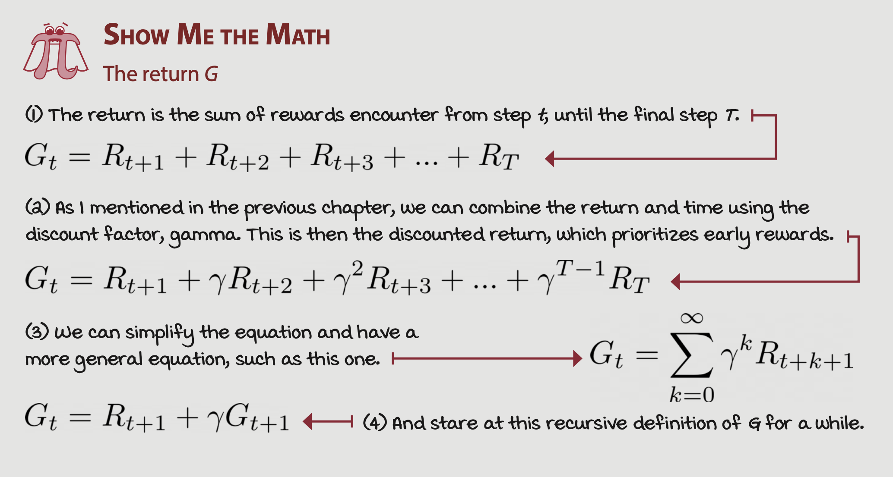
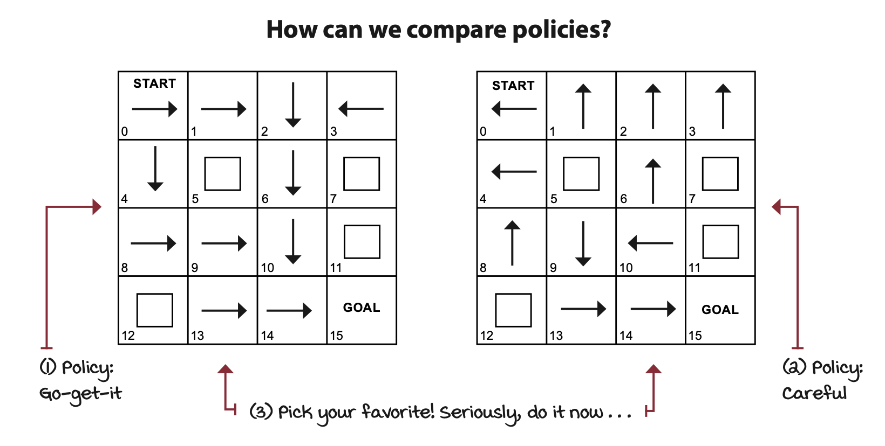
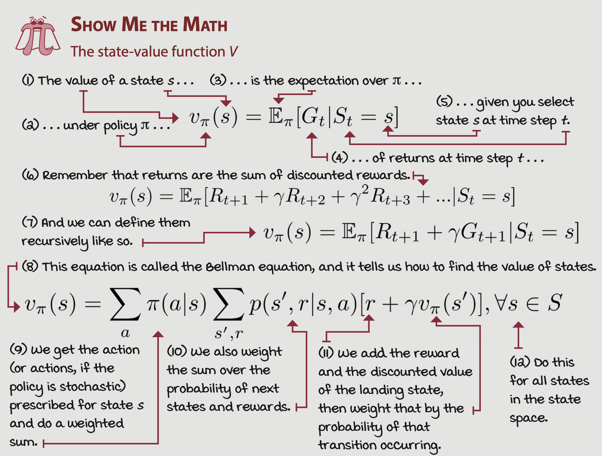
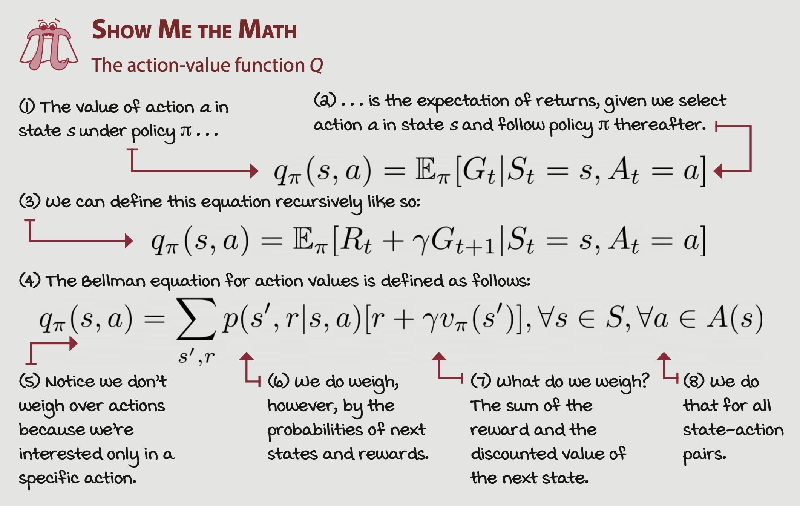
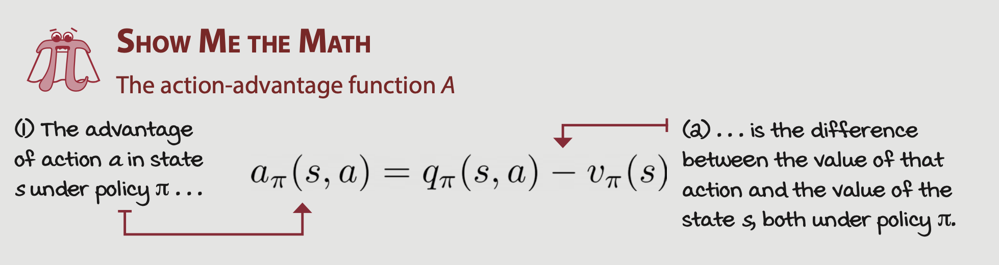

Balancing Immediate and Long-term Goals: An Introduction to Policy Optimization in Reinforcement Learning
In this installment of our journey through the intriguing world of reinforcement learning (RL), we are going to delve deeper into the process of learning from interaction. More specifically, we’ll explore how an agent can formulate a plan and balance immediate versus long-term goals to maximize its overall rewards.
In previous discussions, we established the foundation of Markov Decision Processes (MDPs), a formal framework for sequential decision-making problems. And while we explored the motivation behind using MDPs, we didn’t quite examine how to solve them. So, how can an agent decide on an optimal course of action in any given state? What does optimality even mean in this context? Let’s dive in.
Agent’s Objective and The Concept of Return
In an MDP, an agent interacts with the environment over a sequence of time steps, taking actions, transitioning between states, and accruing rewards. As we already learned, the concept of return plays a crucial role. It’s the cumulative reward an agent receives over an episode. Here, we note an interesting perspective - while return can be viewed as the accumulated rewards from past time steps, we could also think of it as the expected rewards from future time steps.

At first glance, one might think that the agent’s objective is to maximize the return. However, that doesn’t capture the full picture - an agent should aim to maximize the expected return, not just the realized rewards. Why? Because the ‘expected’ part takes into account the probabilities of those returns. Thus, the agent wants to maximize the chance of getting a good return, not just any return, irrespective of its likelihood.
Policies: Per-state Action Prescriptions
To achieve the goal of maximizing expected return, an agent needs a policy, denoted as π. It’s a guide that prescribes an action for each non-terminal state. This policy is like a universal plan that takes into account every possible state. A policy can be stochastic, meaning it can either directly prescribe an action or provide a probability distribution over possible actions.

Now, given a policy, how can we decide which one is better? How can we compare different policies? This brings us to the concepts of state-value functions and action-value functions.
State-Value Function: What to Expect From Here?
The state-value function allows us to compute the expected return starting from every state, considering the agent follows a particular policy π. Although calculating the value of a state might seem challenging (since the value of one state might depend on another), it is achievable using dynamic programming methods.

Action-Value Function: What Should I Expect from Here if I Do This?
Another key function in reinforcement learning is the action-value function, often referred to as the Q-function. It provides the expected return if an agent follows policy π after taking action ‘a’ in a state ‘s’. The Q-function helps capture the dynamics of the environment, which, in turn, aids in improving policies.

Action-Advantage Function: How Much Better if I Do That?
Further, the action-advantage function shows the difference between the action-value function and the state-value function for a given state-action pair under policy π. It effectively quantifies how much better it is to take an action ‘a’ compared to following the policy’s default action in a state ‘s’.
 ## Optimality
So, what is optimality in this context? When we say something is optimal, we mean it’s the best
The Objective of a Decision-Making Agent
As we start our journey into reinforcement learning, let’s first focus on the objective of a decision-making agent. In reinforcement learning, an agent is rewarded for its actions, providing it with motivation to achieve its goals. These rewards are summed up across one episode of interaction with the environment to calculate the return. This accumulation of rewards provides a straightforward benchmark for the agent’s performance, leading us to think that an agent’s objective could simply be to maximize the return.
However, this perspective isn’t entirely accurate. While maximizing the return might be an effective strategy in certain scenarios, it doesn’t take into account the probabilities or uncertainties inherent in the environment. What an agent should really optimize for is the expected return, which takes into account the likelihood of obtaining different returns.
Policies: Per-state Action Prescriptions
A policy, denoted by \(\pi\), is a mapping from states to actions. It is essentially a strategy that the agent uses to decide what action to take in a given state. In a deterministic policy, the agent takes a specific action for each state. However, in a stochastic policy, the policy provides a probability distribution over actions, adding an element of randomness to the agent’s actions.
A good policy balances immediate and long-term rewards, factoring in both the current state of the environment and potential future states. This principle is the crux of the dynamic programming approach, which we will explore later.
State-Value Function: What to Expect from Here?
As we consider policies, we naturally want to compare them to find the best one. To do this, we need to compute the expected return starting from every state, considering the full trajectory of possible future states under a given policy. This is the purpose of the state-value function.
Formally, the value of a state \(s\) under policy \(\pi\), denoted as \(V^{\pi}(s)\), is the expected return when starting from state \(s\) and following policy \(\pi\). However, the state-value function is recursive in nature; the value of each state is dependent on the value of future states.
Action-Value Function: What Should I Expect from Here if I Do This?
While the state-value function gives us the expected return for starting at a certain state and following a policy, we also need to know the expected return for taking a specific action in a certain state. This is where the action-value function, or Q-function, comes in.
The action-value function, \(Q^{\pi}(s,a)\), gives the expected return if the agent is in state \(s\), takes action \(a\), and then follows policy \(\pi\). Like the state-value function, it is also recursive, but it adds an additional level of detail by considering specific actions.
Action-Advantage Function: How Much Better if I Do That?
While knowing the expected returns from certain actions in certain states is useful, we might also want to know how much better one action is compared to others. The action-advantage function, \(A^{\pi}(s,a)\), provides this comparison.
The action-advantage function measures the difference between the action-value function for a certain action in a state and the state-value function for that state under a given policy. Essentially, it gives a measure of how much better it is to take a particular action over others suggested by the policy in a given state.
Optimality: Striving for the Best
Optimal Policies and Optimality
Now, we’ve touched a bit on the notion of optimality while discussing the policy improvement process. So, what exactly does ‘optimal’ mean in the context of RL? Optimality is the state in which a policy can’t be improved any further. In other words, an optimal policy is one that yields expected returns greater than or equal to any other policy, for all possible states. Notably, there could be multiple optimal policies that are equivalent.
Applying this concept of optimality to our value and Q functions can give us the optimal Q function and the optimal value function. In an optimal policy, the optimal Q function can be obtained with a one-step search using the optimal value function, and vice versa. This one-step lookahead process can provide a significant advantage for our agent in navigating the decision-making landscape.
Planning Optimal Sequences of Actions: Policy Iteration and Value Iteration
When the environment dynamics are known, you can iteratively compute equations for the optimal Q and V functions to obtain the optimal policy. We can use two key strategies here: policy iteration and value iteration.
Policy Evaluation: Rating Policies
Policy evaluation refers to the estimation of a value function from a policy and an MDP. By ‘rating’ policies in this way, we can learn how good a policy is in terms of the expected return from each state.
In policy evaluation, we start with an initial value function (often arbitrarily initialized), then iteratively update this function until it converges to the true value function for the given policy. This iterative method uses a technique known as ‘bootstrapping’, where an estimate is updated based on other estimates.
Policy Improvement: Using Ratings to Get Better
Having evaluated the quality of a policy, the next step is to find better policies. This process is known as policy improvement. Using the policy-evaluation phase’s output, we generate a Q-function, then construct a new, improved policy that’s greedy with respect to this Q-function.
Policy Iteration: Improving Upon Improved Behaviors
Policy iteration combines the steps of policy evaluation and policy improvement, alternately evaluating and improving the policy until it no longer changes. This procedure ensures the convergence of the algorithm towards an optimal policy.
A key note: when multiple actions yield identical Q-values, you mustn’t break ties randomly. Random tie-breaking could lead to erratic behavior and instability in the learning process.
Value Iteration: Improving Behaviors Early
While policy iteration has a separate policy evaluation step that iterates until convergence before a policy improvement step, value iteration has a more aggressive approach. Value iteration truncates the policy evaluation phase and initiates the policy improvement phase after just one pass through the state space. This strategy allows the value estimates to propagate through the states more quickly.
Wrapping up
In this post, we’ve journeyed through the process of solving an MDP, focusing on dynamic programming approaches. Remember, the end goal of an RL agent is not to maximize raw returns, but to maximize the expected return, factoring in the probability of getting those returns.
With the tools we’ve discussed, you can equip an RL agent to tackle complex decision-making tasks, iterating between evaluation and improvement of policies to navigate towards the optimal solution.
Stay tuned for our next deep dive into reinforcement learning, where we’ll discuss how RL agents can learn directly from interactions with the environment when the environment’s dynamics are unknown. Until then, happy learning!